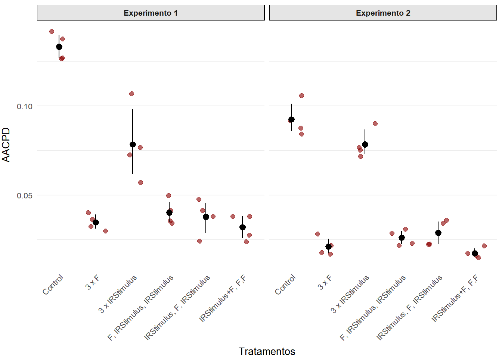
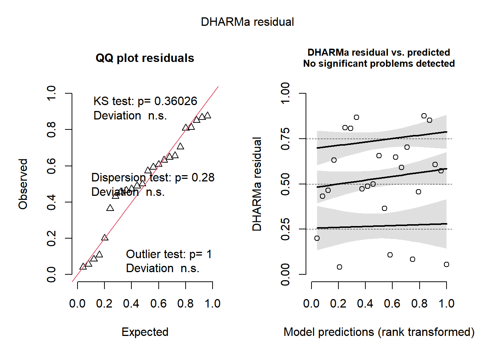
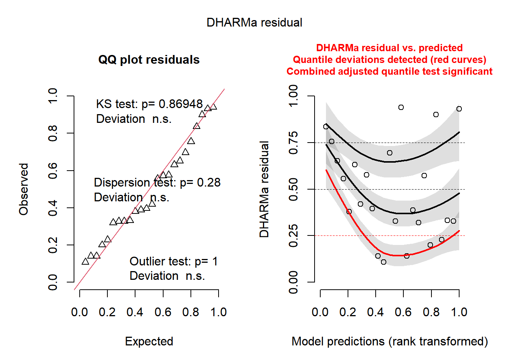

── Attaching core tidyverse packages ──────────────────────── tidyverse 2.0.0 ──
✔ dplyr 1.1.4 ✔ readr 2.1.5
✔ forcats 1.0.0 ✔ stringr 1.5.1
✔ lubridate 1.9.4 ✔ tibble 3.2.1
✔ purrr 1.0.4 ✔ tidyr 1.3.1
── Conflicts ────────────────────────────────────────── tidyverse_conflicts() ──
✖ dplyr::filter() masks stats::filter()
✖ dplyr::lag() masks stats::lag()
ℹ Use the conflicted package (<http://conflicted.r-lib.org/>) to force all conflicts to become errors
library(drc)
Carregando pacotes exigidos: MASS
Anexando pacote: 'MASS'
O seguinte objeto é mascarado por 'package:dplyr':
select
'drc' has been loaded.
Please cite R and 'drc' if used for a publication,
for references type 'citation()' and 'citation('drc')'.
Anexando pacote: 'drc'
Os seguintes objetos são mascarados por 'package:stats':
gaussian, getInitial
library(kableExtra)
Anexando pacote: 'kableExtra'
O seguinte objeto é mascarado por 'package:dplyr':
group_rows
library(DT)library(leaflet)
Localização dos Experimentos
## plot do viveiro leaflet() |>addTiles() |>setView(lng =-42.8497 , lat =-20.7453, zoom =16)
Importação os dados - Germinação de Uredósporos (GU)
Os dados utilizados nesta análise serão importados de uma planilha google sheet. Após importação, algumas colunas de dados serão transformados para fatores. O intuito é facilitar o desenvolvimento das análises.
Para calcular a dose do produto que é capaz de inibir 50% da germinação dos uredósporos do patógeno faremos uso da função drm (pacote drc) modelando para em Log-logistico W1.4.
Com base no modelo gerado anteriormente e na função ED, foi possível estimar que a dose do produto suficiente para inibir 50% da inibição dos uredósporos é de 1.99.
Tabela de Resultados
colnames(GU2) =c('Dose', "Germinação Média (%)", "Inibição da Germinação (%)")kable(GU2,align ="ccc")
Dose
Germinação Média (%)
Inibição da Germinação (%)
0.00
70.90
0.00
2.50
26.93
62.01
3.75
9.69
86.34
5.00
6.08
91.42
7.50
4.24
94.02
10.00
3.64
94.86
Gráfico de Dose ✕ Germinação
plot(EC,xlab = Dose~(ml~L^-1),ylab ="Germinação média (%)",xt =c("0", "2.50", "3.75", "5", "7.5", "10"),ylim =c(0,100),pch =19, col ="grey20")
Importação dos dados - Progresso Temporal da Doença (PTD)
Os dados utilizados nesta análise serão importados de uma planilha google sheet.
PTD <-gsheet2tbl("https://docs.google.com/spreadsheets/d/1zEsVt_nnmydEUBJjkyMrOLHEu6pXeM-SmwTXyEoNbmg/edit?gid=1680501439#gid=1680501439")PTD <- PTD |>mutate(SEVERIDADE =as.numeric(str_replace(SEVERIDADE, ",", ".")) /100)## Mudando os dados de percentagem para proporçãoPTD = PTD |>mutate(SEVERIDADE = SEVERIDADE/100)## Mudando o nome dos tratamentos TRATAMENTO <-c("Control", "3 x F", "3 x IRStimulus","F, IRStimulus, IRStimulus", "IRStimulus, F, IRStimulus", "IRStimulus+F, F,F" )names(TRATAMENTO) <-c("1", "2", "3", "4", "5", "6") # Mapeando números para nomes de tratamentos# Atualizar a variável tratamento no data framePTD$TRATAMENTO <-factor(PTD$TRATAMENTO, levels =names(TRATAMENTO), labels = TRATAMENTO)
Preparando os dados para análise
Após importação os dados serão manipulados para obtermos a severidade média por experimento, tratamento e tempo.
`summarise()` has grouped output by 'REPETIÇÃO', 'TRATAMENTO'. You can override
using the `.groups` argument.
head(PTD_2)
# A tibble: 6 × 4
# Groups: REPETIÇÃO, TRATAMENTO [1]
REPETIÇÃO TRATAMENTO DAE sev_mean
<fct> <fct> <dbl> <dbl>
1 1 Control 36 0.00001
2 1 Control 43 0.0000713
3 1 Control 50 0.000165
4 1 Control 57 0.000259
5 1 Control 63 0.000344
6 1 Control 70 0.00194
Cálculo da área abaixo da curva de progresso da doença
Para calcular a área abaixo da curva de progresso da doença (AACPD), utilizaremos a função audpc (epifitter). Com essa função, manipularemos os dados de modo que, ao final, tenhamos um valor de AACPD para cada ensaio, bloco e tratamento.
`summarise()` has grouped output by 'REPETIÇÃO', 'TRATAMENTO'. You can override
using the `.groups` argument.
head(PTD_3)
# A tibble: 6 × 4
# Groups: REPETIÇÃO, TRATAMENTO [2]
REPETIÇÃO TRATAMENTO BLOCO audpc
<fct> <fct> <fct> <dbl>
1 1 Control 1 0.127
2 1 Control 2 0.142
3 1 Control 3 0.126
4 1 Control 4 0.138
5 1 3 x F 1 0.0400
6 1 3 x F 2 0.0363
Visualização Gráfica
library(ggplot2)# Define o tema padrão como theme_minimal() com tamanho de fonte 10theme_set(theme_minimal(base_size =10))# Gráfico com personalizaçõesPTD_3 %>%ggplot(aes(TRATAMENTO, audpc)) +geom_jitter(width =0.3, alpha =0.6, colour ="darkred", size =2 ) +stat_summary(fun.data ="mean_cl_boot", color ="black" ) +labs(x ="Tratamentos",y ="AACPD" ) +theme(# Ajustes específicos dos eixosaxis.title.y =element_text(vjust =+3),axis.title.x =element_text(vjust =-1),axis.text.x =element_text(angle =45, hjust =1),# Melhorias visuais adicionais (opcional)panel.grid.major.x =element_blank(), # Remove linhas de grade verticaisstrip.background =element_rect(fill ="gray90"), # Fundo dos facetsstrip.text =element_text(face ="bold") # Texto dos facets em negrito ) +facet_wrap(~ REPETIÇÃO, labeller =labeller( REPETIÇÃO =c("1"="Experimento 1","2"="Experimento 2" ) ) )

Determinação do modelo
Para definir se é possível ou não realizar a análise da varíavel AACPD (audpc) combinando os resultados dos ensaios, será feita uma análise de variância (ANOVA) considerando o experimento (ensaio) como um fator.
Pela análise de variância, considerando o experimento (ensaio) como um fator, observamos que há interação entre fatores (TRATAMENTO:EXPERIMENTO, valor de probabilidade < 0.05), logo não será possível analisar a área abaixo da curva de progresso da doença (AACPD - audpc) em conjunto, sendo necessário avaliação dos experimentos individualmente.
Pelo fato de não haver homogeneidade de variâncias entre os grupos, será preciso transformar os dados. Uma alternativa será definir um modelo com o logaritmo da audpc.
Modelo transformado e nova avaliação das premissas
OK: residuals appear as normally distributed (p = 0.083).
check_heteroscedasticity(PTD_AUDPC_1_log)
OK: Error variance appears to be homoscedastic (p = 0.588).
plot(simulateResiduals(PTD_AUDPC_1_log))

Pelos resultados obtidos para as análises de normalidade e homocedasticidade, observamos que os dados atendem às pressuposições da ANOVA. Portanto, não serão necessárias transformações. Assim, podemos prosseguir a análise.
ANOVA
anova(PTD_AUDPC_1_log)
Analysis of Variance Table
Response: log(audpc)
Df Sum Sq Mean Sq F value Pr(>F)
TRATAMENTO 5 6.5872 1.31745 52.3843 5.755e-09 ***
BLOCO 3 0.3937 0.13124 5.2185 0.01147 *
Residuals 15 0.3772 0.02515
---
Signif. codes: 0 '***' 0.001 '**' 0.01 '*' 0.05 '.' 0.1 ' ' 1
Comparação de médias
medias_PTD_AUDPC_1 <-emmeans(PTD_AUDPC_1_log, ~ TRATAMENTO, type ="response")medias_PTD_AUDPC_1
TRATAMENTO response SE df lower.CL upper.CL
Control 0.1330 0.01050 15 0.1123 0.1575
3 x F 0.0344 0.00273 15 0.0291 0.0408
3 x IRStimulus 0.0763 0.00605 15 0.0645 0.0904
F, IRStimulus, IRStimulus 0.0397 0.00315 15 0.0335 0.0470
IRStimulus, F, IRStimulus 0.0367 0.00291 15 0.0310 0.0434
IRStimulus+F, F,F 0.0312 0.00247 15 0.0263 0.0369
Results are averaged over the levels of: BLOCO
Confidence level used: 0.95
Intervals are back-transformed from the log scale
cld(medias_PTD_AUDPC_1,Letters = LETTERS)
TRATAMENTO response SE df lower.CL upper.CL .group
IRStimulus+F, F,F 0.0312 0.00247 15 0.0263 0.0369 A
3 x F 0.0344 0.00273 15 0.0291 0.0408 A
IRStimulus, F, IRStimulus 0.0367 0.00291 15 0.0310 0.0434 A
F, IRStimulus, IRStimulus 0.0397 0.00315 15 0.0335 0.0470 A
3 x IRStimulus 0.0763 0.00605 15 0.0645 0.0904 B
Control 0.1330 0.01050 15 0.1123 0.1575 C
Results are averaged over the levels of: BLOCO
Confidence level used: 0.95
Intervals are back-transformed from the log scale
P value adjustment: tukey method for comparing a family of 6 estimates
Tests are performed on the log scale
significance level used: alpha = 0.05
NOTE: If two or more means share the same grouping symbol,
then we cannot show them to be different.
But we also did not show them to be the same.
OK: residuals appear as normally distributed (p = 0.573).
check_heteroscedasticity(PTD_AUDPC_2)
OK: Error variance appears to be homoscedastic (p = 0.190).
plot(simulateResiduals(PTD_AUDPC_2))
Warning in newton(lsp = lsp, X = G$X, y = G$y, Eb = G$Eb, UrS = G$UrS, L = G$L,
: Fitting terminated with step failure - check results carefully

ANOVA
anova(PTD_AUDPC_2)
Analysis of Variance Table
Response: audpc
Df Sum Sq Mean Sq F value Pr(>F)
TRATAMENTO 5 0.0212505 0.0042501 453.72 8.244e-16 ***
BLOCO 3 0.0006447 0.0002149 22.94 7.396e-06 ***
Residuals 15 0.0001405 0.0000094
---
Signif. codes: 0 '***' 0.001 '**' 0.01 '*' 0.05 '.' 0.1 ' ' 1
Comparação de médias
medias_PTD_AUDPC_2 <-emmeans(PTD_AUDPC_2, ~ TRATAMENTO, type ="response")medias_PTD_AUDPC_2
TRATAMENTO emmean SE df lower.CL upper.CL
Control 0.0924 0.00153 15 0.0891 0.0956
3 x F 0.0211 0.00153 15 0.0179 0.0244
3 x IRStimulus 0.0784 0.00153 15 0.0752 0.0817
F, IRStimulus, IRStimulus 0.0260 0.00153 15 0.0228 0.0293
IRStimulus, F, IRStimulus 0.0288 0.00153 15 0.0255 0.0320
IRStimulus+F, F,F 0.0174 0.00153 15 0.0141 0.0206
Results are averaged over the levels of: BLOCO
Confidence level used: 0.95
cld(medias_PTD_AUDPC_2,Letters = LETTERS)
TRATAMENTO emmean SE df lower.CL upper.CL .group
IRStimulus+F, F,F 0.0174 0.00153 15 0.0141 0.0206 A
3 x F 0.0211 0.00153 15 0.0179 0.0244 AB
F, IRStimulus, IRStimulus 0.0260 0.00153 15 0.0228 0.0293 BC
IRStimulus, F, IRStimulus 0.0288 0.00153 15 0.0255 0.0320 C
3 x IRStimulus 0.0784 0.00153 15 0.0752 0.0817 D
Control 0.0924 0.00153 15 0.0891 0.0956 E
Results are averaged over the levels of: BLOCO
Confidence level used: 0.95
P value adjustment: tukey method for comparing a family of 6 estimates
significance level used: alpha = 0.05
NOTE: If two or more means share the same grouping symbol,
then we cannot show them to be different.
But we also did not show them to be the same.